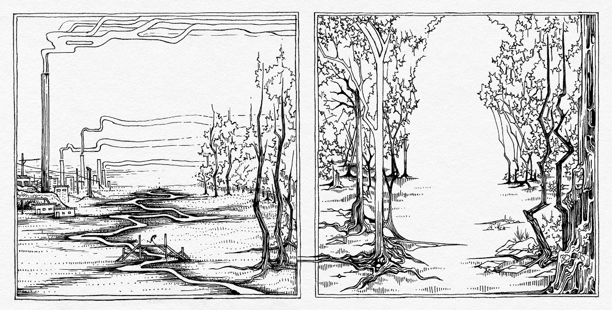
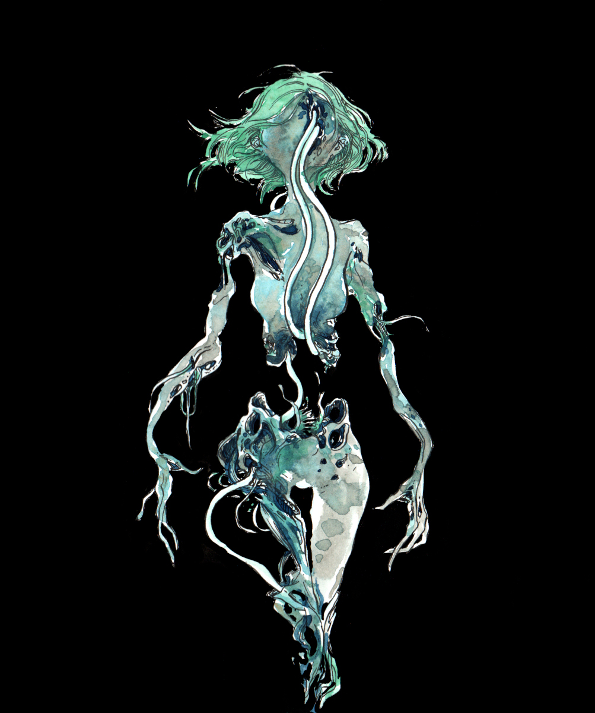

illustration

"we found that the splintering wood and crumbling brick were only held together by decrepit dreams, after all.
we played in the strange construction, though we did not know the dreamer. we did not know if we ever had."

four color riso print "cement factory"
edition of thirty, available here

"she was found in a moonlit pond, lotus seed pods growing through her.
it wasn't uncommon for her model to be stolen and harvested for certain high-grade parts."



illustrations for Velvet Effigy's puppet show, Eyes of the Beholder.

"REGEN"

riso print "slow drip"